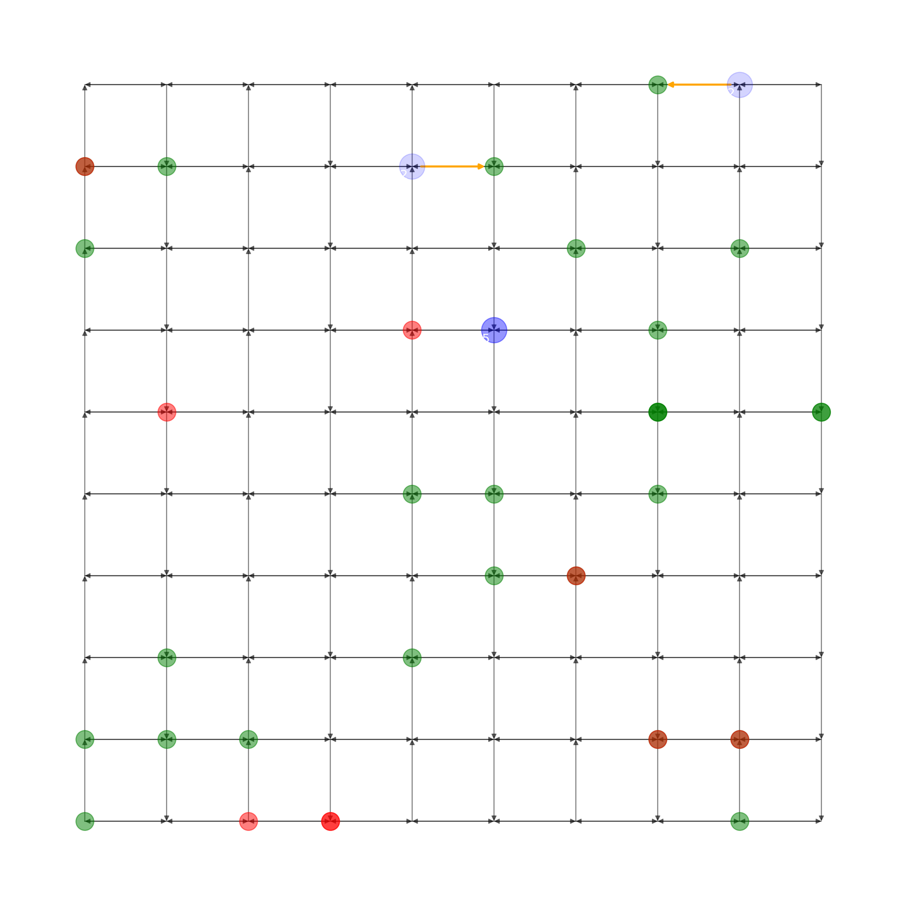

Code
import networkx as nx
import matplotlib.pyplot as plt
import random
import numpy as np
import time
from math import radians, sin, cos, sqrt, atan2
from scipy.optimize import linear_sum_assignment
from threading import Timer
# Bus class definition
class Bus:
def __init__(self, node, load):
self.node = node
self.load = load
self.pickup_queue = []
self.dropoff_queue = []
self.dropoff = None
self.target_node = None
self.next_target_node = None
self.dropoff_count = 0
# Student class definition
class Student:
def __init__(self, pickup_node, dropoff_node):
self.pickup_node = pickup_node
self.dropoff_node = dropoff_node
self.load = 1
self.bus = None
# Function to create a cost matrix
def cost_matrix(bus_list, student_list, G):
num_buses = len(bus_list)
num_students = len(student_list)
max_dim = max(num_buses, num_students)
cost_matrix = np.zeros((max_dim, max_dim))
for i, bus in enumerate(bus_list):
for j, student in enumerate(student_list):
path = nx.shortest_path(G, bus.node, student.pickup_node if student.bus is None else student.dropoff_node, weight='weight')
distance = len(path) - 1
if student.bus is None or (bus.load > 1 and student.bus == bus):
cost_matrix[i, j] = distance
else:
cost_matrix[i, j] = 1e6
# set cost of assigning a student to a bus with a load of 1 to infinity
if bus.load == 1 and student.bus is None and bus.dropoff is not None and bus.dropoff == student.dropoff_node:
cost_matrix[i, j] = 1e6
for i in range(num_buses, max_dim):
for j in range(num_students):
cost_matrix[i, j] = 1e6
for i in range(num_students, max_dim):
for j in range(num_buses):
cost_matrix[i, j] = 1e6
return cost_matrix
# Function to create a graph
def create_graph():
G = nx.DiGraph()
for i in range(10):
for j in range(10):
G.add_node((i, j))
if i < 9:
G.add_edge((i, j), (i + 1, j), weight=1)
G.add_edge((i + 1, j), (i, j), weight=1)
if j < 9:
if i % 2 == 0:
G.add_edge((i, j), (i, j + 1), weight=1)
else:
G.add_edge((i, j + 1), (i, j), weight=1)
return G
def generate_pickup_dropoff(G, student_list):
nodes = list(G.nodes)
pickup_node = random.choice(nodes)
nodes.remove(pickup_node)
dropoff_node = random.choice(nodes)
# Ensure the dropoff node is at least 5 nodes away from the pickup node
while nx.shortest_path_length(G, pickup_node, dropoff_node, weight='weight') < 6:
dropoff_node = random.choice(nodes)
# Ensure that the generated pair is unique and the new pickup node is not the same as the last student's dropoff node
while any(existing_student.pickup_node == pickup_node and existing_student.dropoff_node == dropoff_node for existing_student in student_list) or (len(student_list) > 0 and student_list[-1].dropoff_node == pickup_node):
nodes = list(set(G.nodes) - {pickup_node})
pickup_node = random.choice(nodes)
nodes.remove(pickup_node)
dropoff_node = random.choice(nodes)
# Ensure the dropoff node is at least 5 nodes away from the pickup node
while nx.shortest_path_length(G, pickup_node, dropoff_node, weight='weight') < 6:
dropoff_node = random.choice(nodes)
return (pickup_node, dropoff_node)
def get_distance(lat1, lon1, lat2, lon2):
R = 6371 # radius of Earth in kilometers
# convert coordinates to radians
lat1, lon1, lat2, lon2 = map(radians, [lat1, lon1, lat2, lon2])
# calculate the differences between the latitudes and longitudes
dlat = lat2 - lat1
dlon = lon2 - lon1
# calculate the distance using the Haversine formula
a = sin(dlat/2)**2 + cos(lat1) * cos(lat2) * sin(dlon/2)**2
c = 2 * atan2(sqrt(a), sqrt(1-a))
distance = R * c
return distance
def get_closest_dropoff_within_limit(bus, student_list, G):
closest_dropoff = None
closest_distance = float('inf')
for student in student_list:
if student.bus == bus:
path = nx.shortest_path(G, bus.node, student.dropoff_node, weight='weight')
distance = len(path) - 1
if distance < closest_distance:
closest_dropoff = student.dropoff_node
closest_distance = distance
return closest_dropoff
def get_closest_pickup_within_limit(bus, student_list, G):
closest_pickup = None
closest_distance = float('inf')
for student in student_list:
if student.bus is None:
path = nx.shortest_path(G, bus.node, student.pickup_node, weight='weight')
distance = len(path) - 1
if distance < closest_distance:
closest_pickup = student.pickup_node
closest_distance = distance
return closest_pickup
# Function to get the next stops for the buses
def get_next_stop(buses, students):
def get_assigned_students(bus, students):
return [student for student in students if student.bus is None or student.bus == bus]
def get_next_stop_for_bus(bus, assigned_students, G):
first_student = bus.pickup_queue[0]
dropoff_path = nx.shortest_path(G, bus.node, first_student.dropoff_node, weight='weight')
passed_dropoff_nodes = sum(1 for student in bus.dropoff_queue if student.dropoff_node in dropoff_path)
# Prioritize closest drop-off node if the bus is at capacity
if bus.load <= 12:
closest_dropoff = get_closest_dropoff_within_limit(bus, bus.dropoff_queue, G)
if closest_dropoff and passed_dropoff_nodes < 6:
return closest_dropoff
# Condition to prioritize closest pickup nodes within the limit
if bus.load <= 11 and passed_dropoff_nodes < 6:
closest_pickup = get_closest_pickup_within_limit(bus, bus.pickup_queue, G)
if closest_pickup:
return closest_pickup
# Prioritize the dropoff node of the student who has been on the bus the longest
if passed_dropoff_nodes >= 6:
return first_student.dropoff_node
next_stops = [None] * len(buses)
for i, bus in enumerate(buses):
assigned_students = get_assigned_students(bus, students)
if not assigned_students:
continue
next_stop = get_next_stop_for_bus(bus, assigned_students, G)
# Check if another bus already has this target_node, if so, set the target_node to None
for other_bus in buses:
if other_bus.target_node == next_stop and other_bus != bus:
next_stop = None
break
next_stops[i] = next_stop
bus.target_node = next_stop
return next_stops
# Function to move the bus and handle pickups and drop-offs
def move_bus(G, bus, target_node, student_list):
if target_node is not None:
path = nx.shortest_path(G, bus.node, target_node, weight='weight')
if len(path) > 1:
bus.node = path[1]
# Handle pickups
pickup_students = [student for student in student_list if student.pickup_node == bus.node and student.bus is None and bus.load <= 11]
for student in pickup_students:
bus.load += student.load
student.bus = bus
if student in bus.pickup_queue:
bus.pickup_queue.remove(student)
if student in bus.dropoff_queue:
bus.dropoff_queue.append(student)
# Handle drop-offs
dropoff_students = [student for student in student_list if student.dropoff_node == bus.node and student.bus == bus or bus.load==12]
for student in dropoff_students:
bus.load -= student.load
student.bus = None
bus.dropoff_count += 1 # Increment dropoff_count
if student in bus.dropoff_queue:
bus.dropoff_queue.remove(student)
# Function to update the bus load based on student pickups and drop-offs
def update_bus_load(bus, student):
if bus.node == student.pickup_node and student.pickup_signal:
bus.load += 1
student.pickup_signal = False
student.dropoff_signal = True
elif bus.node == student.dropoff_node and student.dropoff_signal:
bus.load -= 1
student.dropoff_signal = False
# Function to visualize the graph, buses, students, and next stops
def visualize(G, bus_list, student_list, next_stops):
plt.figure(figsize=(12, 12))
pos = {(i, j): (i, j) for i in range(15) for j in range(15)}
nx.draw(G, pos, with_labels=False, node_size=0, width=1, alpha=0.5)
for bus in bus_list:
alpha_value = np.clip(bus.load / 12, 0, 1)
nx.draw_networkx_nodes(G, pos, nodelist=[bus.node], node_color='blue', node_size=600, alpha=alpha_value)
x, y = pos[bus.node]
plt.text(x - 0.15, y - 0.15, str(bus.load), fontsize=12, color='white')
pickup_nodes = [student.pickup_node for student in student_list if student.bus is None]
dropoff_nodes = [student.dropoff_node for student in student_list if student.bus is not None]
nx.draw_networkx_nodes(G, pos, nodelist=pickup_nodes, node_color='green', node_size=300, alpha=0.5)
nx.draw_networkx_nodes(G, pos, nodelist=dropoff_nodes, node_color='red', node_size=300, alpha=0.5)
for bus in bus_list:
target_node = next_stops[bus]
if target_node is not None:
path = nx.shortest_path(G, bus.node, target_node, weight='weight')
edges = [(path[i], path[i + 1]) for i in range(len(path) - 1)]
nx.draw_networkx_edges(G, pos, edgelist=edges, edge_color='orange', width=2)
plt.show(block=False)
plt.pause(1)
plt.close()
# Function to update the next stops for the buses
def update_next_stops(bus_list, next_stops):
for bus in bus_list:
if bus.load == 0:
next_stops[bus] = None
# Create the graph
G = create_graph()
# Create the list of buses
bus_list = [Bus(node=random.choice(list(G.nodes)), load=0) for _ in range(3)]
# Create the list of students
student_list = []
# Function to add a new pickup request to the student_list
def add_pickup():
pickup, dropoff = generate_pickup_dropoff(G, student_list)
student_list.append(Student(pickup_node=pickup, dropoff_node=dropoff))
Timer(.1, add_pickup).start()
# Add initial students to the student_list
for _ in range(36):
pickup, dropoff = generate_pickup_dropoff(G, student_list)
student = Student(pickup_node=pickup, dropoff_node=dropoff)
# Check if the student has the same pickup and dropoff nodes as any existing student
while any(existing_student.pickup_node == pickup and existing_student.dropoff_node == dropoff for existing_student in student_list):
pickup, dropoff = generate_pickup_dropoff(G, student_list)
student.pickup_node = pickup
student.dropoff_node = dropoff
student_list.append(student)
bus_list[0].pickup_queue.append(student) # Assign students to the first bus' pickup queue initially
# Set maximum iterations and initialize the current_iteration
max_iterations = 14
current_iteration = 0
# Main loop
while current_iteration < max_iterations:
# Calculate the cost matrix and get the next stops for buses
cost_mat = cost_matrix(bus_list, student_list, G)
row_ind, col_ind = linear_sum_assignment(cost_mat)
next_stops = {bus_list[i]: student_list[col_ind[i]].pickup_node if student_list[col_ind[i]].bus is None else student_list[col_ind[i]].dropoff_node for i in range(len(bus_list))}
# Move buses and update next stops
for bus, target_node in next_stops.items():
move_bus(G, bus, target_node, student_list)
update_next_stops(bus_list, next_stops)
# Visualize the current state
visualize(G, bus_list, student_list, next_stops)
# Sleep for a while before the next iteration
time.sleep(.1)
# Increment the current_iteration counter
current_iteration += 1
